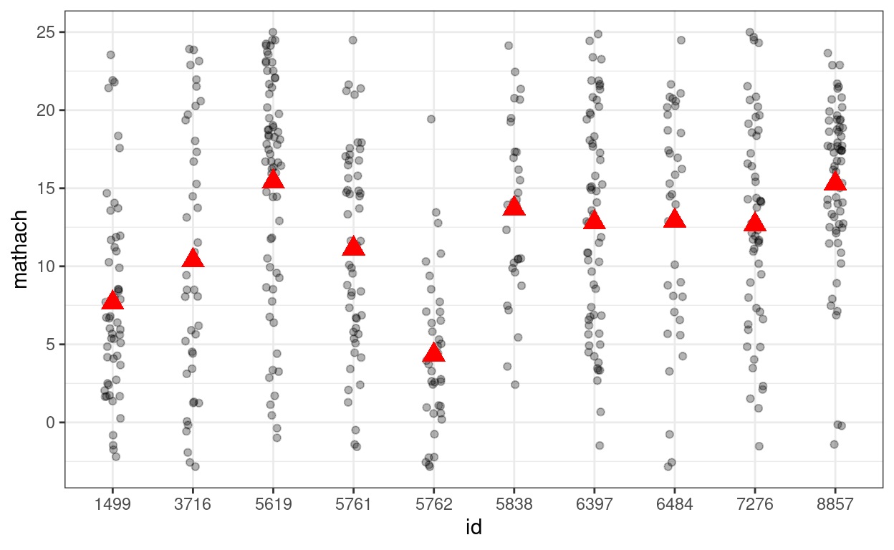
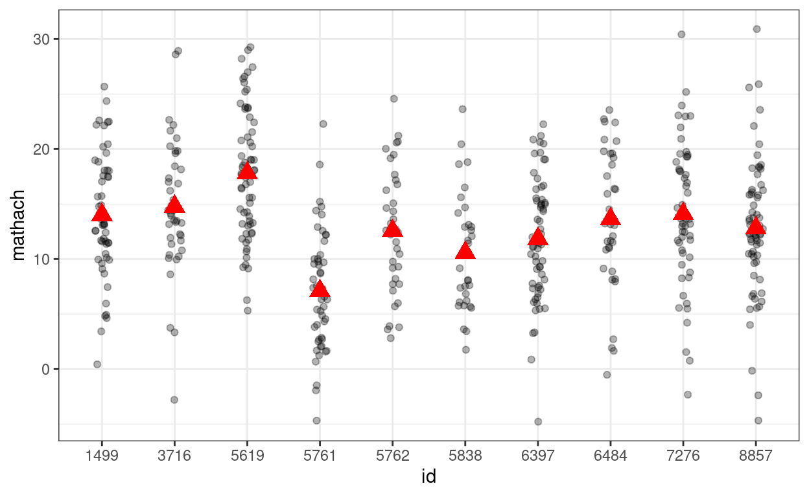
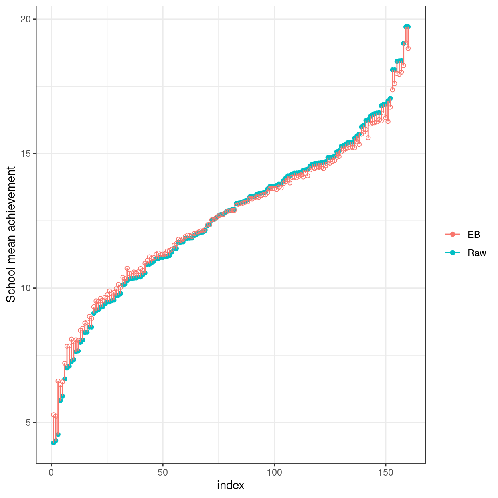

\[ \newcommand{\bv}[1]{\boldsymbol{\mathbf{#1}}} \]
Click here to download the Rmd file: week3-random-intercept-model.Rmd
You can use the message=FALSE option to suppress the package loading messages
# To install a package, run the following ONCE (and only once on your computer)
# install.packages("psych")
library(here) # makes reading data more consistent
library(tidyverse) # for data manipulation and plotting
library(haven) # for importing SPSS/SAS/Stata data
library(lme4) # for multilevel analysis
library(lattice) # for dotplot (working with lme4)
library(sjPlot) # for plotting effects
library(MuMIn) # for computing r-squared
library(r2mlm) # for computing r-squared
library(broom.mixed) # for summarizing results
library(modelsummary) # for making tables
theme_set(theme_bw()) # Theme; just my personal preference
In R, there are many packages for multilevel modeling, two of the most common ones are the lme4 package and the nlme package. In this note I will show how to run different basic multilevel models using the lme4 package, which is newer. However, some of the models, like unstructured covariance structure, will need the nlme package or other packages (like the brms and the rstanarm packages with Bayesian estimation).
First, download the data from https://github.com/marklhc/marklai-pages/raw/master/data_files/hsball.sav. Well import the data in .sav format using the read_sav() function from the haven package.
# Read in the data (pay attention to the directory)
hsball <- read_sav(here("data_files", "hsball.sav"))
hsball # print the data
># # A tibble: 7,185 11
># id minority female ses mathach size sector pracad disclim
># <chr> <dbl> <dbl> <dbl> <dbl> <dbl> <dbl> <dbl> <dbl>
># 1 1224 0 1 -1.53 5.88 842 0 0.35 1.60
># 2 1224 0 1 -0.588 19.7 842 0 0.35 1.60
># 3 1224 0 0 -0.528 20.3 842 0 0.35 1.60
># 4 1224 0 0 -0.668 8.78 842 0 0.35 1.60
># 5 1224 0 0 -0.158 17.9 842 0 0.35 1.60
># 6 1224 0 0 0.022 4.58 842 0 0.35 1.60
># 7 1224 0 1 -0.618 -2.83 842 0 0.35 1.60
># 8 1224 0 0 -0.998 0.523 842 0 0.35 1.60
># 9 1224 0 1 -0.888 1.53 842 0 0.35 1.60
># 10 1224 0 0 -0.458 21.5 842 0 0.35 1.60
># # with 7,175 more rows, and 2 more variables: himinty <dbl>,
># # meanses <dbl>Lv-1: \[\text{mathach}_{ij} = \beta_{0j} + e_{ij}\] where \(\beta_{0j}\) is the population mean math achievement of the \(j\)th school, and \(e_{ij}\) is the level-1 random error term for the \(i\)th individual of the \(j\)th school.
Lv-2: \[\beta_{0j} = \gamma_{00} + u_{0j}\] where \(\gamma_{00}\) is the grand mean, and \(u_{0j}\) is the deviation of the mean of the \(j\)th school from the grand mean.
The lme4 package require input in the format of
outcome ~ fixed + (random | cluster ID)For our data, the combined equation is \[\text{mathach}_{ij} = \gamma_{0j} + u_{0j} + e_{ij}, \] which we can explicitly write \[\color{red}{\text{mathach}}_{ij} = \color{green}{\gamma_{0j} (1)} + \color{blue}{u_{0j} (1)} + e_{ij}. \] With that, we can see
mathach,1,1, andid.Thus the following syntax:
# outcome = mathach
# fixed = gamma_{00} * 1
# random = u_{0j} * 1, with j indexing school id
ran_int <- lmer(mathach ~ 1 + (1 | id), data = hsball)
# Summarize results
summary(ran_int)
># Linear mixed model fit by REML ['lmerMod']
># Formula: mathach ~ 1 + (1 | id)
># Data: hsball
>#
># REML criterion at convergence: 47116.8
>#
># Scaled residuals:
># Min 1Q Median 3Q Max
># -3.0631 -0.7539 0.0267 0.7606 2.7426
>#
># Random effects:
># Groups Name Variance Std.Dev.
># id (Intercept) 8.614 2.935
># Residual 39.148 6.257
># Number of obs: 7185, groups: id, 160
>#
># Fixed effects:
># Estimate Std. Error t value
># (Intercept) 12.6370 0.2444 51.71# Randomly select 10 school ids
random_ids <- sample(unique(hsball$id), size = 10)
(p_subset <- hsball %>%
filter(id %in% random_ids) %>% # select only 10 schools
ggplot(aes(x = id, y = mathach)) +
geom_jitter(height = 0, width = 0.1, alpha = 0.3) +
# Add school means
stat_summary(
fun = "mean",
geom = "point",
col = "red",
shape = 17,
# use triangles
size = 4
) # make them larger
)

\[Y_{ij} = \gamma_{00} + u_{0j} + e_{ij},\]
gamma00 <- 12.6370
tau0 <- 2.935
sigma <- 6.257
num_students <- nrow(hsball)
num_schools <- length(unique(hsball$id))
# Simulate with only gamma00 (i.e., tau0 = 0 and sigma = 0)
simulated_data1 <- tibble(
id = hsball$id,
mathach = gamma00
)
# Show data with no variation
# The `%+%` operator is use to substitute with a different data set
p_subset %+%
(simulated_data1 %>%
filter(id %in% random_ids))
# Simulate with gamma00 + e_ij (i.e., tau0 = 0)
simulated_data2 <- tibble(
id = hsball$id,
mathach = gamma00 + rnorm(num_students, sd = sigma)
)
# Show data with no school-level variation
p_subset %+%
(simulated_data2 %>%
filter(id %in% random_ids))
# Simulate with gamma00 + u_0j + e_ij
# First, obtain group indices that starts from 1 to 160
group_idx <- group_by(hsball, id) %>% group_indices()
# Then simulate 160 u0j
u0j <- rnorm(num_schools, sd = tau0)
simulated_data3 <- tibble(
id = hsball$id,
mathach = gamma00 +
u0j[group_idx] + # expand the u0j's from 160 to 7185
rnorm(num_students, sd = sigma)
)
# Show data with both school and student variations
p_subset %+%
(simulated_data3 %>%
filter(id %in% random_ids))

The handy simulate() function can also be used to simulate the data
You can easily plot the estimated school means (also called BLUP, best linear unbiased predictor, or the empirical Bayes (EB) estimates, which are different from the mean of the sample observations for a particular school) using the lattice package:
Heres a plot showing the sample schools means (with no borrowing of information) vs.the EB means (borrowing information).
# Compute raw school means and EB means
hsball %>%
group_by(id) %>%
# Raw means
summarise(mathach_raw_means = mean(mathach)) %>%
arrange(mathach_raw_means) %>% # sort by the means
# EB means (the "." means using the current data)
mutate(mathach_eb_means = predict(ran_int, .),
index = row_number()) %>% # add row number as index for plotting
ggplot(aes(x = index, y = mathach_raw_means)) +
geom_point(aes(col = "Raw")) +
# Add EB means
geom_point(aes(y = mathach_eb_means, col = "EB"), shape = 1) +
geom_segment(aes(x = index, xend = index,
y = mathach_eb_means, yend = mathach_raw_means,
col = "EB")) +
labs(y = "School mean achievement", col = "")

variance_components <- as.data.frame(VarCorr(ran_int))
between_var <- variance_components$vcov[1]
within_var <- variance_components$vcov[2]
(icc <- between_var / (between_var + within_var))
># [1] 0.1803518# 95% confidence intervals (require installing the bootmlm package)
# if (!require("devtools")) {
# install.packages("devtools")
# }
# devtools::install_github("marklhc/bootmlm")
bootmlm:::prof_ci_icc(ran_int)
># 2.5 % 97.5 %
># 0.1471784 0.2210131We have one predictor, meanses, in the fixed part.
hsball %>%
ggplot(aes(x = meanses, y = mathach, col = id)) +
geom_point(alpha = 0.5, size = 0.5) +
guides(col = "none")
Lv-1:
\[\text{mathach}_{ij} = \beta_{0j} + e_{ij}\]
Lv-2:
\[\beta_{0j} = \gamma_{00} + \gamma_{01} \text{meanses}_j + u_{0j}\] where \(\gamma_{00}\) is the grand intercept, \(\gamma_{10}\) is the regression coefficient of meanses that represents the expected difference in school mean achievement between two schools with one unit difference in meanses, and and \(u_{0j}\) is the deviation of the mean of the \(j\)th school from the grand mean.
># Linear mixed model fit by REML ['lmerMod']
># Formula: mathach ~ meanses + (1 | id)
># Data: hsball
>#
># REML criterion at convergence: 46961.3
>#
># Scaled residuals:
># Min 1Q Median 3Q Max
># -3.13480 -0.75256 0.02409 0.76773 2.78501
>#
># Random effects:
># Groups Name Variance Std.Dev.
># id (Intercept) 2.639 1.624
># Residual 39.157 6.258
># Number of obs: 7185, groups: id, 160
>#
># Fixed effects:
># Estimate Std. Error t value
># (Intercept) 12.6494 0.1493 84.74
># meanses 5.8635 0.3615 16.22
>#
># Correlation of Fixed Effects:
># (Intr)
># meanses -0.004# Likelihood-based confidence intervals for fixed effects
# `parm = "beta_"` requests confidence intervals only for the fixed effects
confint(m_lv2, parm = "beta_")
># 2.5 % 97.5 %
># (Intercept) 12.356615 12.941707
># meanses 5.155769 6.572415The 95% confidence intervals (CIs) above showed the uncertainty associated with the estimates. Also, as the 95% CI for meanses does not contain zero, there is evidence for the positive association of SES and mathach at the school level.
sjPlot::plot_model(m_lv2, type = "pred", terms = "meanses",
show.data = TRUE, title = "",
dot.size = 0.5) +
# Add the group means
stat_summary(data = hsball, aes(x = meanses, y = mathach),
fun = mean, geom = "point",
col = "red",
shape = 17,
# use triangles
size = 3,
alpha = 0.7)
We will use the \(R^2\) statistic proposed by Nakagawa, Johnson & Schielzeth (2017) to obtain an \(R^2\) statistic. There are multiple versions of \(R^2\) in the literature, but personally I think this \(R^2\) avoids many of the problems in other variants and is most meaningful to interpret. Note that I only interpret the marginal \(R^2\).
# Generally, you should use the marginal R^2 (R2m) for the variance predicted by
# your predictors (`meanses` in this case).
MuMIn::r.squaredGLMM(m_lv2)
># R2m R2c
># [1,] 0.1233346 0.1786815An alternative, more comprehensive approach is by Rights & Sterba (2019, Psychological Methods, https://doi.org/10.1037/met0000184), with the r2mlm package
r2mlm::r2mlm(m_lv2)
># $Decompositions
># total within between
># fixed, within 0 0 NA
># fixed, between 0.123334641367122 NA 0.690248683624938
># slope variation 0 0 NA
># mean variation 0.0553468169145697 NA 0.309751316375062
># sigma2 0.821318541718308 1 NA
>#
># $R2s
># total within between
># f1 0 0 NA
># f2 0.123334641367122 NA 0.690248683624938
># v 0 0 NA
># m 0.0553468169145697 NA 0.309751316375062
># f 0.123334641367122 NA NA
># fv 0.123334641367122 0 NA
># fvm 0.178681458281692 NA NANote the fixed, between number in the total column is the same as the one from MuMIn::r.squaredGLMM(). Including school means of SES in the model accounted for about 12% of the total variance of math achievement.
Notice that the standard error with regression is only half of that with MLM.
m_lm <- lm(mathach ~ meanses, data = hsball)
msummary(list("MLM" = m_lv2,
"Linear regression" = m_lm))
| MLM | Linear regression | |
|---|---|---|
| (Intercept) | 12.649 | 12.713 |
| (0.149) | (0.076) | |
| meanses | 5.864 | 5.717 |
| (0.361) | (0.184) | |
| sd__(Intercept) | 1.624 | |
| sd__Observation | 6.258 | |
| Num.Obs. | 7185 | |
| R2 | 0.118 | |
| R2 Adj. | 0.118 | |
| AIC | 46969.3 | 47202.4 |
| BIC | 46996.8 | 47223.0 |
| Log.Lik. | 23480.642 | 23598.190 |
| F | 962.329 | |
| REMLcrit | 46961.285 |